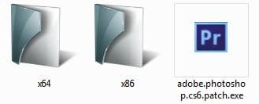
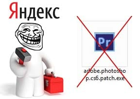
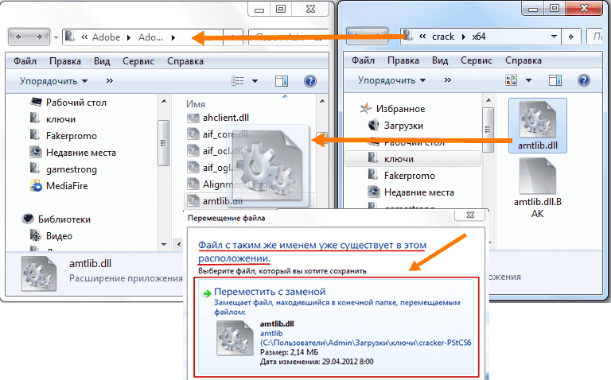
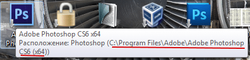
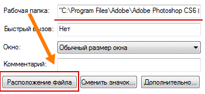

Скачать ключ для Adobe Photoshop CS6 бесплатно
Если вам понадобилось, серийный номер, или ключ к программе Фотошоп cs6, активации программ с помощью серийных номеров это не сложный процесс, мы поможем вам в активации ключа бесплатно. Вы сможете использовать скачанные ключи кряки не отправляя не каких платных смс.
Серийный номер adobe photoshop cs6 (фотошоп) скачать
После скачивания Архива с серийными номерами(ключами) распакуйте его предварительно прочитав информацию по активации.
Некоторые серийные номера-ключи для фотошоп cs6.
| 1330-1146-3681-1955-2763-9292 | 1330-1104-6325-2505-8672-5644 | 1330-1975-9803-7350-6260-7600 |
| 1330-1368-5371-6700-5106-7374 | 1330-1074-9927-8053-9097-5097 | 1330-1770-1838-1503-3016-0802 |
| 1330-1429-5001-8939-6681-4163 | 1330-1866-1477-3652-5522-6949 | 1330-1795-5908-8640-3198-6271 |
| 1330-1730-5020-2247-0439-1533 | 1330-1008-7627-8528-1072-2391 | 1330-1035-3045-0659-6623-3517 |
| 1330-1070-2030-6771-8310-7520 | 1330-1068-5535-1227-6697-8685 | 1330-1030-8368-1727-9808-6852 |
| 1330-1951-3554-7957-3933-4951 | 1330-1049-5213-1665-7925-2622 | 1330-1336-8274-3651-5738-6725 |
| 1330-1320-8641-1111-2401-3625 | 1330-1057-6478-9939-5631-8147 | 1330-1649-7432-6198-5086-7987 |
| 1330-1372-0241-9514-3154-1095 | 1330-1740-2728-4264-5870-9559 | 1330-1958-2072-1007-3048-8501 |
Внимание! Ниже есть инструкция по активации кряком. Если не получилось активировать то скорее всего удастся скачать фотошоп cs6 с ключом. Варианты установок можно посмотреть здесь стоит только скачать и установить предварительно удалив предыдущий не активированный фотошоп.
Как Активировать Crack для Photoshop CS6
1. Распакуйте архив архиватором WinRAR найдите файл adobe.photoshop.cs6.patch.exe и запустите его.
2. Откроется программа чтоб активировать нажмите кнопку «Patch» (если вдруг появится окно с надписью «ФАЙЛ НЕ НАЙДЕН» укажите путь к amtlib.dll самостоятельно) они есть в папке с Crack для CS6, если у вас x64 версия windows то выбирайте папку с надписью x64 а если 32x или 86х то папка x86.
Скачать ключ(кряк) для Adobe фотошоп CS6
Файлы находящиеся в папке с серийниками и ключами распакованном из архива:

Недавно ресурс стал в яндексе отображаться с пометкой о вирусе, яндекс использует мало кому известный антивирус Sophos, по этому мало кому известно почему компания яндек выводит пометку на весь сайт а не на отдельные страницы. Sophos показывает что в файле adobe.photoshop.cs6.patch.exe есть какой-то жуткий вирус которые популярные и известные нам антивирусы не видят. Я конечно доверяю популярным но мало известным и известным только яндексу sophos antivirus придется подчинится и удалить из архива patch, используйте инструкцию ниже с ручной заменой и все получится без exe файла!

Если с помощью патча не получается активировать тогда сделайте следующее:
Скопируйте из папки файл amtlib.dll в папку с установленной программой (с заменой существующего) в зависимости от разрядности файлы разные, в архиве они распределены по папкам. В папках есть amtlib.dll.BAK его можно не трогать вовсе.
Инструкция немного обновилась и вместо 1-го dll мы положили несколько, копировать и управлять можно из приложения которое скачаете по ссылке ниже.
Скачать amtlib.dll для Cs6 x64 и x32

Совет! Если будете экспериментировать с заменой файлов, то перед выполнением любых действий скопируйте из папки с установленной программой оригинальный amtlib.dll. В случае не запуска программы верните с заменой оригинальный файл.
Чтоб по быстрому узнать папку с программой можно просто навести курсор на ярлык с программой на рабочем столе и покажется путь к программе.

Второй вариант быстрый и точный, для этого нужно на ярлыке нажать правой кнопкой мыши и выбрать свойства потом нажать на расположение файла и вы попадете сразу в папку с программой.

спасибо !!!! если ещё и работать будет то цены тебе нет !!!! низкий поклон
все получилось
Здравствуйте! Хочу поставить на 10вин, но боюсь, пока нет защиты, все в тесте. Честно, не очень дружу с программами и боюсь запороть новый комп. Поэтому вопрос: какую версию фотошопа качать, как новичку? Нужны ли кисти, плагины и шрифты сразу? Так ли всё просто с ключами? Спасибо!
Спасибо, работает)) :3
После выбора «пробной версии» начинает подключать к интернету. Но не подключается! «компьютер отключен от сети или неправильно настроены дата и время». Но, интернет работает и время выставлено.
Что можно с этим сделать?
помоголо сбасибо
У меня скачиваетсядумаю будет всё пучком
ниодин серийник не работает!
используйте патч
Патч не скачивается — сидов нет, и загрузка не идёт. Что делать?
попробуйте скачать сейчас
спасибо большоееееее
Благодарю)
все работает. большое спасибо!!!
работает я активировал
Раскрыть архив комментариев (вопросы-ответы)
Я скажу честно что все работает я использовал замену файла
пока самый актуальный способ
Скачала кряк с этого сайта. Устанавливала на чистую Винду. Делала все по инструкциям. Стало нормально. Аваст не ругался. Наконец нормальный кряк в сеть выложили. Перед этим скачала с другого сайта, поймала какой-то вирус. Пришлось сносить операционку. Благодарим за предоставление проверенных и таких необходимых для большинства пользователей файлов.
славо богу активировал, а то проект висит а окно задолбало выскакивать
анологично а то как ножом по сердцу когда выскакивает
Годный ключ, я доволен, что нашел, работает зачетно. Нормальные ключи, на ADOBE PHOTOSHOP CS6, кстати, найти не так уж и, просто, покупать лицензионные дело достаточно затратное. Поначалу, правда были небольшие проблемы с установкой, но почитал инструкцию, по установке и все проблемы оказались пустяковыми. Конечно, проверил антивирусом нодом, все чисто, так что качать можно смело.
я проверил каспером вроде все норм
а почему кряк не работает а перемешение файла да?
видимо пути к файлу разные патч не обновляли, но принцип в нем то что он находит папку и меняет там файл, тоесть это можно делать в ручную
Все прикольно. Ключ кряк хорош. Активировался сразу без проблем. Мне нравится. Фотошоп работает отлично, мне это важно, потому что постоянно приходится пользоваться им по работе. Спасибо за такой кряк, облегчили мне жизнь и работу.
сто балов все работает
Решила переустановить фотошоп по некоторым причинам, но не смогла найти действующий ключ к нему. Везде через платные смс, как это достало! Но здесь на удивление прошло все без каких-либо препятствий. Думала, что очередной развод, но оказалось, быстро и удобно. А главное, выгодно для кармана! Вирусов никаких не наблюдалось, хотя антивирусник у меня хороший.
советую всем!!!!!!!!!!!!!!!
хорошее дело
спасибо все круто
слава богу наконец то нашла нормальный сайт без требований выслать платные сообщения и тому прочей фигни. скачиваешь абсолютно бесплатно , вирусов не нашла, работает без вылетов и «зависов», в общем не жалею. Инструкция простая, даже я поняла как активировать кряк)) приятный интерфейс. ADOBE PHOTOSHOP CS6 отличная вещь! Администратору большое спасибо!
думал развод а нет все честно
Спасибо,скачала! Кряк подошел, всё нормуль. Честно говоря и не надеялась воспользоваться полноценным! Как-то лицензионку приобретать не здорово хочется. Тем более -не хочется тратиться на это дело. А без кряка конечно тоже не то, нет возможностей и прога не тянет. А тут все без всяких проблем! Работает прога не хуже лицензионки. Спасибо разработчикам сайта!
используйте кряк ключи уже разобрали халявщики
это да
Всё подошло, главное делать по инструкции, там всё ясно и понятно расписано! Антивирус не ругается, файлы безопасны. Причём всё расписано проще простого, у кого не получается делайте всё строго, не отходя от инструкции и всё у вас получится! Просто не надо всё делать наугад, а потом удивляться, что ничего не получилось. Теперь смогу нормально работать с фотошопом, спасибо!
правильно
действительно кряк работает
Вчера, за весь вечер «перемаслал» кучу форумов в поиске нормального (работающего) ключа для фотошопа, практически везде ключи были либо платные, либо уже не активные. Попробовал «ключик» с вашего сайта, программа на моем «компе» активировалась без каких-либо проблем и ограничений! Выражаю огромную благодарность за помощь в «оживлении» нужной мне программы!!!
использовал кряк
блин ну наконец таки)))
Не верю своим глазам! заработало!!! Поклон автору! Все четко, ясно и по теме! Даже картинки со стрелочками соизволил сделать! Активация и скачивание заняло всего 5 минут, если бы друг-художник не подкинул эту ссылку — я бы сутки наверное сидел по всяким форумам, искал бы что к тему. Кстати до этого я так и делал, перечитывал бесполезные комментарии и споры на форумах. Надо с ними будет тоже поделиться))
не знаю все работает
К сожалению, не запускается patch.exe. Ругается антивирус + выводится системное сообщение об отсутствии какой-то dll. Пробовала на 2 компьютерах — Windows 7 и 8.1 (нелицензионные, если что) — эффект один и тот же. Отключение антивируса ситуацию не меняет. Кто-нибудь сталкивался с такой проблемой? Или этот патч работает только на каких-то определенных версиях винды?
проверка
разоблачитель типо то что ты проверишь кому то поможет)))
Все подошло, работает. Где только не искал, ни один не подходил, а здесь все нормально. Без вирусов и прочего вредоносного ПО, бесплатно, просто взял и скачал. Ознакомился по готовой информации и распаковал архив. Все. Жаль что раньше не смог найти эту страничку. Большое спасибо человеку который выложил ключи, еще не известно сколько бы я искал эти ключи без вашей помощи.
У меня тоже
Все прикольно. Ключ кряк хорош. Активировался сразу без проблем. Мне нравится.
Ура наконец то нашла нормальный сайт. Теперь можно работать спокойно. Понравилось, что не надо высылать никаких платных смс, все бесплатно. Обычно не могу разобраться, а тут совершено понятная и простая инструкция. Даже блондинка все поймет и установит. Вирусов никаких не обнаружила, все работает хорошо. Если, что то не получается читайте просто внимательнее.
мне 12 и я не хера не понял
подрастешь поймешь))))))))))
Установила себе на новый ноутбук Фотошоп, понадобился ключ. Поиск привёл на этот сайт. Всё получилось быстро (хотя я не особо технически подкованный человек), программка скачалась, я легко разобралась во всём — инструкция вполне доходчивая. Вирусов не обнаружилось, проблемы с этим не было. Теперь у меня есть работающий Фотошоп — и, самое главное, бесплатно))
читайте вникайте и все получится
ок
Такое тщательное разжевывание. Мне с моими «программисткими» способностями разве что на калькуляторе работать, но ведь фотошоп освоить хочется всем и я не исключение. Какой ключ по счету подошел не помню, но все заработало(правда я не сразу догадалась перезапустить комп). Радости моей нет предела. Осталось только с самой программой разобраться, а ведь это сущие мелочи.
ну не сказал бы я что это пустяки
good
Долго не могла найти взломщика для своего Фотошопа, приходилось его каждые 30 дней перестанавливать, а постоянно выплывающие и выскакивающие окна просто сводили меня с ума. Сейчас случайно зашла на этот сайт, скачала патч, установила, взломала — все работает! Окна поисчезали, теперь у меня настоящая лицензионная программа. Я очень рада и счастлива, это конец моим мучениям!
Это хорошо
кароче я из папки достал и как на картинке, все работает.
++++ +5555
Здравствуйте администрация данного сайта! Можете мне помочь? Сейчас опишу проблему… У меня на пк стоит антивирус AVG, так вот он ругается на ехе-файл… Если я отключу антивирус, то с моим компьютером ничего не станет? А то вот при скачивании кряка для бандикам некоторые писали типо: «отключай, не бойся; просто антивирус видит программный код, который отключает требование активировать лицензию» и тп. А потом компьютер начинает жутко тормозить и в диспетчере задач появлятся процесс Bitminer.exe .
не чего не станет, в любом случае вам решать.
черт возьми вы лучшие))
Не хочется платить по моим меркам большие деньги за Фотошоп, тем более учитывая нынешний курс доллара, а работать надо. Инструкция по установке добротно написана, даже такой неопытный пользователь как я все понял и сделал. Теперь можно работать, а то до этого у меня был другой кряк и нельзя было работать с включенным интернетом, потому что после подключения Фотошоп все равно требовал регистрации.
хорошая работа
хорошая рыбка
Нормальная инструкция — даже я все поняла. После введения серийника и перезагрузки все хорошо стало работать — не вылазит постоянно окно с предупреждением. И,что самое главное — бесплатно! Я уж было решила лицензию купить, да дороговато — использую программу только для своего развлечения. Ну так детские фоточки подправить, или фон размыть. Спасибо автору!
Не знаю я тупой по моему((
ха ха х
ржу нимагу
пошло
норм
Все работает прекрасно, счастью не было предела как называется))я долгое время искала приличный кряк,ну все попадались какие то кидалова,везде сначала плати,а потом жди,а тут быстро и бесплатно, довольно все понятно, затруднений никаких не не вызвало даже у меня, хотя с компьютером я не на ты,а тут все пошагово описано, уже чувствую себя почти хакером)) в общем респект вам ребята!
добро бобрам лайк вам!!!
имне хочу
Ура! Нашла ключ, который подошел! И главное, что бесплатно, не надо отправлять кучу платных смс с подтверждением! Отдельная благодарность автору за подробную инструкцию, даже я, чайник, с легкостью разобралась! А если у кого-то не получилось с первого раза — не отчаивайтесь, пробуйте еще, в конце концов обязательно должно получиться!
И еще совет вдогонку: если не работает — попробуйте перезагрузить компьютер, иногда помогает!))
Отличный кряк, взломал Photoshop без проблем за довольно короткое время. Конечно понадобилось шесть раз ввести серийные номера из списка, но на шестой уже точно помогло, никаких всплывающих окон теперь нет, наконец-то ничего не отвлекает меня от работы. Главное, выполнять всё по инструкции, и не расстраиваться, если не получилось с первого раза, несколько минут времени дешевле, чем лицензия программы.
Не понял как что делать слишком сложно( для меня(
Сколько времени истратив пытаясь найти нормальный ключ к фотошопу. Сначала вроде скачиваешь и все нормально, но ключ не подходит. И такое чувство, что попал в день сурка. Ваш ключ помог установиться быстро и без вирусов оказался, редкость в наше время. Скажите есть у вас ключи на программу компас или на вин машин?Нереально дорогие программы, хотя и полезные.
Просто респектуха Вам
и вам
Благодарю Вас, добрые люди, за бесплатные кряки! Это просто счастье, что я наткнулась на эту страницу НУ просто респект Вам и уважуха! Наконец-то у меня есть нормальный доступ и не надо ничего покупать. Я вообще считаю, что фотошоп должен быть бесплатным! А все остальным скажу так, вирусов нет, инструкция очень понятная, даже полный чайник справится! Так что качаем быстрее, пока все не разобрали!
ничтячок все таки
лайкую
Сколько мучений было с фотошопом, танцы с бубнами, уговорами. Пересмотрел кучу форумов, сайтов, социальных сетей. Везде либо не по делу, либо непонятно все рассказывают. Тут наконец все ясно, четко и по делу. Нормальные картинки, комментарии, описания, все заработало с первого раза. Сохранил эту ссылку себе, советую и вам это сделать, в будущем пригодится ни один раз! Спасибо автору!
Спасибо инструкция работает!
Ну наконец-то ключ смогла подобрать! Сейчас очень тяжело найти под любую версию кряк, просит отправить платное смс или купить аккаунт какой…ну его. А без фотошопа тяжело, всё-таки среди всех программ самая удобная и многофункциональная. Написано всё очень просто, автор статьи молодец, постарался на славу. Мой антивирус не ругался(аваст), так что всё путём!
анологично
работает качаем amtlib.dll.BAK ваше не нужен
Я очень рад, что все работает! Подобрал себе ключ, но и патч тоже возьму, вещь хорошая, наверняка пригодится!)) Уже довольно таки долго не мог найти нормальный не глюченый патч или правильный ключ, и кругом одна сплошная лажа, либо развод, либо деньги платить надо. А тут бесплатно, и все работает. Где вы раньше были? Столько нервов истратил. Вы большие молодцы!
качать можно!
Ну наконец-то, уже пол интернета облазил чтобы найти именно то, что есть здесь, понятная инструкция, все четко, взял 7 серийник, все пошло отлично, установил, перезагрузил, теперь сижу и радуюсь. И кстати о вирусах, проверил авастом, лично у меня ничего не обнаружил, все чисто. Чуваки, если делать все по инструкции, а не тыкать на то что видишь)), то все у вас встанет отлично, еще раз спасибо!
ключи бред кряк за*бись
Устала все время платить за ключи, как не через смс так на банковский счет. Это то, что я так долго искала. Все предельно просто и ясно, а я хотела обращаться к мастеру, благодаря вам сэкономила деньги и нервы) Сделала так, как указано в статье и во всем быстро разобралась, хотя я не сильна в этих делах. Почаще бы писали такие адекватный и понятливые пошаговые статьи, и мир бы стал добрее!)
Благодарочка…
спс
спасибо
Довольно подробно все описано, что и как. Но изначально не подошел ни один из ключей (да, я перепробовала все-все). Потом почему-то надумала переустановить программу и первый же взятый ключ подошел. Не бралась за кряк так как один раз уже пыталась установить, но в итоге снесла и photoshop и винду. Так что пользуюсь теперь исключительно ключами. Вам плюсик за такое их огромное количество
как раз кстати
Я думаю, что для многих людей эти серийные номера станут очень полезными в их работе. Ведь не у каждого есть возможность купить лицензионное программное обеспечение. А теперь благодорая таким людям, у многих будет возможность работать в своей любимой программе без каких-либо проблем или сбоев. Наверное к моим словам благодарности присоеденится не один человек, который будет использовать эти ключики.
Огромное спасибо, наконец то я активировала
Перепробовал все ключи до одного, даже по несколько раз, и ничего не подошло. Скачал кряк, распаковал, и все завелось. Кряк реально рабочий и без подводных камней. Отсюда вопрос, может ключи как-то генерируются или есть какой-то генератор, чтобы не париться вот так по одному вводить? Или есть определенные соответствия по версиям фотошопа и сборкам???
Есть генератор но он до 5 версии и там тоже своеобразная инструкция, плюс антивирусы не любят exe файлы keygen генераторов.
по началу не понял потом разобрался
Наконец-то! Нашел нормальный кряк для шестой версии, а то уже запарили эти вылеты и окно на пол экрана с непонятными иероглифами. Мне подошел третий серийник, ввёл в поле, нажал принять, затем перезагрузил компьютер, запустил Фотошоп и вуа ля! Теперь все работает как часы и не беспокоит каждые 10 минут. Спасибо огромное сайту и автору за труды, полезная вещь!
ключи не пробовал, сразу запатчил, работает.
Спасибо повникал маленько и получилось
Давно искал нормальный кряк, а то постоянно банят меня, а работать надо. Не скажу, что я скряга и можно купить лицензию, но мне его никто не оплатит. Вирусов нет, каспером проверил все нормально. Единственно не сразу встали ключи, пришлось переустанавливать, чтобы заново новый ключ ввести. По мне так легче переустановить, чем покупать и да и пользуюсь теперь спокойно.
Серийники даже не пробовал. Кряк не подошел. скопипастил файлы из архива и пошло)
не один из ключей не подошел.
качайте кряк
Долго искала ключ. Везде просят выслать платные смс сообщения, которые стоят дорого. Оказалось, что активация программ с помощью серийных номеров совсем не сложно. Радует, что теперь это доступно абсолютно бесплатно! Скачала архив, ознакомилась с информацией и распаковала. Никаких вирусов нет! Главное — скопировать файлы с архива и все пойдет!
Файл с вирусом вам что делать нечего7
нет там вируса Аваст по крайней мере не ругается, а у вас какой антивирус?
Я не пойму, что здесь за дискуссия. Для скачивания кряка есть вполне понятная инструкция . Даше школьник разберется. Делал все пошагово и у меня получилось. Прога работает, не лагает. Антивирус (Касперскй) не ругался. Люди! Читайте инструкции, не надо методом тыка делать серьезные дела. И у вас обязательно все получится. Терпения и еще раз терпения)))